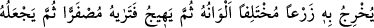
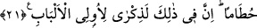
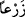
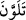
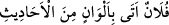
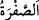

21. Görmedin mi? Allah gökten bir su indirdi, onu yerdeki kaynaklara yerleştirdi,
sonra onunla türlü türlü renklerde ekinler yetiştiriyor. Sonra onlar kurur da sapsarı
olduklarını görürsün. Sonra da onu kuru bir kırıntı yapar. Şüphesiz bunlarda akıl
sâhipleri için bir öğüt vardır.
“Görmedin mi?” Ey Muhammed veya ey bakan herkes! “Allah gökten” arş’ın altından
“bir su” yağmur “indirdi,”
Ebû Hüreyre’den rivâyet edildiğine göre Hz. Peygamber (s.a.) şöyle buyurmuştur:
“Tatlı sular ve aşılayıcı rüzgârlar Beytü’l-makdis’teki kayanın altından gelmektedir.”
Yâni ırmak olsun başka bir şey olsun yeryüzündeki bütün sular gökten bulutlara, oradan
da bu kayanın altına iner. Sonra Allah bu suyu bütün bölgeler arasında paylaştırır.
“Onu yerdeki kaynaklara yerleştirdi,” Yâni o suyu, tıpkı insan bedenindeki damarlar
gibi pınarlara ve kaynaklara yerleştirdi. “Yerdeki” lafzı, bu kaynakların nerede
bulunduğunu beyân etmektedir. Burada kaynak suyunun aslının yağmur olduğuna,
yeryüzünün onu tutup sonra azar azar yüzeye çıkardığına işâret vardır.
“__WORD__ kendisinden suyun çıktığı pınar, “__WORD__ ise onun çoğulu, suyun kaynayıp çıktığı
yerler demektir.
“Sonra onunla” o suyla “türlü türlü renklerde” buğday, arpa gibi türü farklı; renk, tad
ve diğer özellikleri farklı “ekinler yetiştiriyor.” çıkarıyor.
“__WORD__ kelimesi aslında, ‘yerden bitirmek’ anlamında bir masdar olmakla birlikte,
burada ‘ekilmiş şey/ekin’ anlamı kasdedilmektedir.
“Sonra” kelimesi, mertebe ya da zaman bakımından sonralık bildirir. “Çıkarır/
çıkarıyor” şeklinde geniş/şimdiki zaman siygasının kullanılması, anlatılan şeklin
zihinlerde canlandırılmasını sağlamak içindir.
el-Müfredât’ta şöyle der: “Ne anlama geldiği bilinmekte olan levn/renk; siyah-beyaz
ve bu ikisinden oluşan renkleri ihtiva eder. Biri, daha önce sâhip olmadığı bir renge
büründüğü zaman “__WORD__ denir. Elvân/renkler lafzı ile cins ve nevîler de kasdedilir.
Meselâ “__WORD__ Falanca, türlü türlü sözler ediyor, demektir. “__WORD__ ise Şu, falan yemeğin tadını andırıyor, demektir.”
“Sonra onlar kurur da” yâni kuruması tamamlanır ve bittiği yerden hareket etme vakti
gelir de yemyeşil ve taze bir ekin olduktan sonra “sapsarı olduklarını görürsün.”
Râğıb der ki: “__WORD__ siyah ile beyaz arasındaki renklerden biridir. Siyaha daha
yakındır. Bu sebeple de bazan siyahlık bu kelime ile ifâde edilir.”